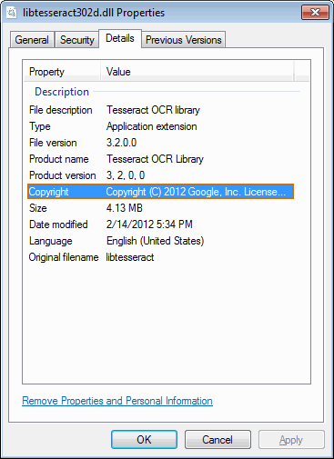

The Visual Studio 2008 Solution for Tesseract-OCR builds:
libtesseract
tesseract.exe
9 training applications (for v3.02)
Unlike earlier Solutions only a single libtesseract library is generated — the twelve projects matching the twelve source subfolders have been abandoned. They were deemed too complicated since they were never (rarely?) used by themselves, but only along with the entire library.
In addition, libtesseract and tesseract.exe can be built using four configurations: LIB_Release, LIB_Debug, DLL_Release, and DLL_Debug.
Two Visual Studio Property Sheets, leptonica_versionnumbers.vsprops and tesseract_versionnumbers.vsprops, are employed to isolate the Solution from changes in dependency version numbers (and isolate dependent Solutions). See APITest’s LIB_Release Linker Additional Dependencies settings for an example of what this looks like in practice. See Leptonica’s explanation About version numbers in library filenames for the rationale behind using Property Sheets.
Open C:\BuildFolder\tesseract-3.0x\vs2008\tesseract.sln in Visual Studio 2008.
You’ll see the following projects in the Solution Explorer (for v3.02):
ambiguous_words
classifier_tester
cntraining
combine_tessdata
dawg2wordlist
libtesseract302
mftraining
shapeclustering
tesseract
unicharset_extractor
wordlist2dawg
Select the build configuration you’d like to use from the Solution Configurations dropdown. It lists the following configurations:
DLL_Debug
DLL_Release
LIB_Debug
LIB_Release
The DLL_ configurations build the DLL version of libtesseract-3.0x (and link with the DLL version of Leptonica 1.68). The LIB_ configurations build the static library version of libtesseract-3.0x (and link with the static version of Leptonica 1.68 and the required image libraries).
Build libtesseract by right-clicking the libtesseract30x project and choosing Build from the pop-up menu.
The resultant library will be written to the C:\BuildFolder\tesseract-3.0x\vs2008\<ConfigurationName> directory where <ConfigurationName> is the same as the build configuration you selected earlier. It is also copied to the C:\BuildFolder\lib folder to make it easy to link your own applications to libtesseract.
The library is named as follows (for v3.02):
static libraries: libtesseract302-static.lib libtesseract302-static-debug.lib DLLs: libtesseract302.lib (import library) libtesseract302.dll libtesseract302d.lib (import library) libtesseract302d.dll
Build the main tesseract OCR application by right-clicking the tesseract project and choosing Build.
The resultant executable will be written to the C:\BuildFolder\tesseract-3.0x\vs2008\<ConfigurationName> directory where <ConfigurationName> is the same as the build configuration you selected earlier. It is named as follows:
LIB_Release: tesseract.exe LIB_Debug: tesseractd.exe DLL_Release: tesseract-dll.exe DLL_Debug: tesseract-dlld.exe
It’s usually better to make a separate directory to test tesseract.exe. To run tesseract, you either need to make sure your test directory contains the tessdata tesseract language data folder or you set the TESSDATA_PREFIX environment variable to point to it. See http://code.google.com/p/tesseract-ocr/wiki/ReadMe for important details.
For example, you can use the following directory structure:
C:\BuildFolder\
include\
lib\
tesseract-3.02\
testing\
tessdata\
Copy your tesseract executable to C:\BuildFolder\testing. If you built a DLL version then be sure to also copy the required DLLs to the same directory (or add C:\BuildFolder\lib to your PATH – However, this isn’t really recommended).
For example, if you are trying to run tesseractd.exe then you’ll need to also copy the following to C:\BuildFolder\testing:
liblept168d.dll
libtesseract302d.dll
Copy a few test images to C:\BuildFolder\testing just to make it easy to run test commands.
Test tesseract by doing something like the following:
tesseractd.exe eurotext.tif eurotext
This will create a file called eurotext.txt that will contain the result of OCRing eurotext.tif.
The training related applications are built using the following projects:
ambiguous_words
classifier_tester
cntraining
combine_tessdata
dawg2wordlist
mftraining
shapeclustering
unicharset_extractor
wordlist2dawg
Note
Currently these applications can ONLY be built with the LIB_Debug and LIB_Release configurations. If you try to use a DLL configuration you’ll get “undefined external symbol” errors.
To build one of the above training applications, simply right-click one of the projects in the Solution Explorer, and choose Build from the pop-up menu.
Alternatively, you can build everything in the Solution by choosing Build ‣ Build Solution (Ctrl+Shift+B) from the menu bar.
See http://code.google.com/p/tesseract-ocr/wiki/TrainingTesseract3 for more information on using these applications.
The Solution file that comes with Tesseract-OCR was created with Visual Studio 2008, and is compatible for the most part with the free Visual C++ 2008 Express Edition. You might, however, sometimes see the following error message:
Fatal error RC1015: cannot open include file 'afxres.h'
The Solution uses resource files to set application and DLL properties that are visible on Windows 7 when you right-click them in Windows Explorer, choose Properties, and look at the Details tab (the Version tab on Windows XP).

Unfortunately, the Express Edition doesn’t include the Resource Editor. So in all resource files:
#include "afxres.h"
has to be changed to:
#include "windows.h"
If someone has used the VS2008 Resource Editor to change a .rc file associated with an application or DLL and forgotten to make these changes before checking the file in, you’ll see the above “Fatal error” message. Simply manually make the change to fix the error.